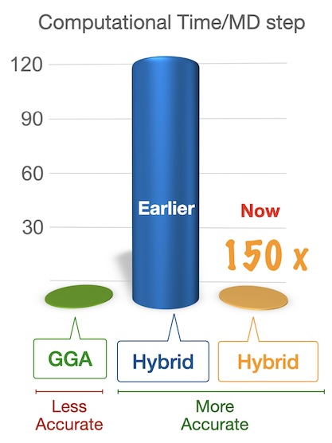
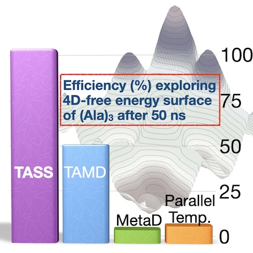
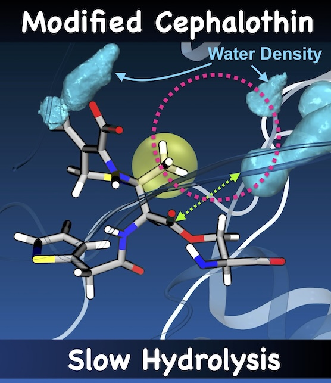
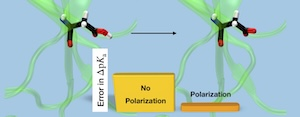
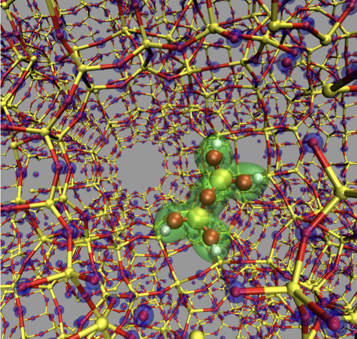
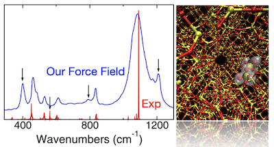
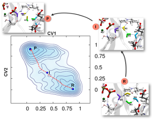
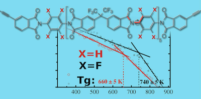

Research
Primary Area: Computational Chemistry
Our current research focuses on modeling chemical reactions in condensed matter systems using molecular dynamics (MD) techniques. Our group has developed several ab initio and QM/MM MD techniques and enhanced sampling methods to improve the accuracy and efficiency of computational methods for mechanistic studies and free energy calculations of complex catalytic systems.
Software Development
We also co-develop the OpenCPMD DFT program. My lab is also developing a new DFT program called AMDKIIT which is tailored to perform DFT MD simulations at higher rungs of DFT functionals.
MM Force Fields
Our group has also developed polarized and non-polarized molecular mechanics (MM) force fields to model systems like polymer-oxide interface, alumino-silicates, high-performance polymers, and polymer nanocomposites.
Key Research Achievements
Some of the major research achievements from the recent research are below:
Major Research Achievements
Molecular dynamics (MD) simulations employing the density functional theory (DFT) method have been extensively utilised to investigate chemical reactions and elucidate structural and dynamic properties of molecular systems. These calculations have been conducted at the generalised gradient approximation (GGA) level for several decades due to the substantial computational overhead associated with simulations at higher levels of DFT, such as using hybrid density functionals. This makes simulations at these levels impractical for large systems over longer timescales. We have developed a novel approach to enhance the efficiency of hybrid density functional-based molecular dynamics calculations, achieving a speedup of up to 100 times. That is hybrid functional based MD simulations can be performed almost the same computational cost of GGA with the help of our method RF-MTACE on parallel computing platforms. This advancement enables the MD simulation community to model complex chemical systems and chemical reactions, with a more accurate theoretical framework. Furthermore, we have implemented this method in a manner that ensures efficient scaling on large numbers of MPI cores. For instance, we have achieved a scaling performance of approximately 70% for a 100-atom system on 48,000 MPI cores.

Enhanced sampling techniques are commonly used in molecular dynamics simulations to accelerate conformational sampling and facilitate barrier-crossing events. These methods are also helpful in calculating free energies along a specific set of coordinates or collective variables (CVs). To efficiently sample high-entropy states and accommodate a large number of CVs, we introduced "Sliced Sampling" methods. These methods include Well-Sliced Metadynamics, Temperature Accelerated Sliced Sampling (TASS), and Bucket Sampling. It has been shown that the directional and controlled sampling features of these techniques are particularly useful for modeling complex enzymatic reactions, protein folding, and drug binding. The divide-and-conquer approach used in these methods helps to employ different auxiliary CVs to sample different parts of the CV-space. The efficiency of these techniques has further improved through the use of a mean-force variant of reconstruction of high-dimensional free energy landscapes, by combining with replica exchange molecular dynamics (MD), and by the application of parallel-bias metadynamics bias potentials. These methods can be easily implemented using PLUMED or the UFEDMM/OpenMM interface programs.

β-Lactamase, a bacterial enzyme, can hydrolyze nearly all the widely used β-lactam drugs efficiently, posing a significant concern to public healthcare. The antibiotic resistance originated from different classes (class-A, B, C, and D) of β-lactamases is yet to be understood in great detail. Our interest is to investigate the hydrolysis mechanism β-lactam drugs by various classes of β-lactamases using molecular dynamics techniques. Our detailed studies on various drugs and inhibitors have given hints to develop new inhibitors against β-lactamases. In 2018, our simulations have disclosed that adding a methyl subsitution to the β-lactam core in β-lactam drugs can decrease its tendancy to hydrolyse once the acyl-enzyme covalent complex is formed. This pave a way to revitalize the existing drug molecules which are otherwise hyrolyzed rapidly by the serine β-lactamases. We demonstrated this by improving the potency of a first generation cephalosporin. We are now actively collaborating with experimentalists to synthesize and test the activity of new molecules proposed by us.

MD simulations are widely used in computing free energy differences between different conformational and chemical states. To compute solvation free energy, pKa, ligand binding free energy, and mutation free energy, methods such as Thermodynamic Integration (TI) and Free Energy Perturbation (FEP), based on MD, are preferred. Practically, however, achieving adequate conformation sampling of relevant degrees of freedom in TI simulations is difficult due to potential energy barriers separating different conformational basins, and presence of high entropic states. To overcome the sampling problem in TI simulations, TI is combined with enhanced sampling MD techniques such as d-AFED and UFED. We employed these approaches in predicting pKa shifts of buried residues in proteins.

We had developed QM/MM techniques to simulate large heterogeneous catalytic systems, such as zeolite-supported metal clusters. We interfaced the plane wave DFT-based CPMD code with molecular mechanics code GULP. We investigated reactions of alkenes catalyzed by Rh clusters supported in a cavity of Y-zeolite using our developed CPMD/GULP QM/MM interface program.

We have developed several molecular mechanics force-fields for modeling materials, polymers, and interfaces:

GTP hydrolysis reactions by GTPases are of great significance due to their central role in biological regulations. For the extensively studied Ras and EF-Tu GTPases conserved glutamine or histidine is identified to be crucial for GTP hydrolysis. A group of GTPases termed HAS (Hydrophobic Amino-acid Substituted)-GTPases naturally possess a hydrophobic residue in place of Gln/His and yet efficiently hydrolyze GTP. Despite structural and biochemical studies on HAS-GTPases, their catalytic mechanism is not well understood. For most of these HAS-GTPases, catalytically crucial residues are not identified by experimental studies. We employ molecular dynamics simulations combined enhanced sampling techniques for understanding the GTP hydrolysis mechanism in HAS-GTPases. Our study is focused on two HAS-GTPases, namely Era and FeoB. These are bacterial HAS GTPases, which can be potential targets for the development of antimicrobial drugs. Therefore, understanding their catalytic mechanism is highly significant from a biological as well as therapeutic perspective. We also aim at extrapolating their mechanisms to other HAS-GTPases using structural bioinformatics.

High-performance polymers (HPPs) have immense applications in the aerospace and electronics industries owing to their high thermal stability and resistance to various environmental conditions. The growing requisite for materials having high thermo-oxidative stability makes the design and development of these materials an active area of research. Improving the high-temperature long-term thermo-oxidative s tability of high-performance polymers is crucial for their applications, particularly aerospace applications. For designing novel polymers with improved thermo-oxidative stability, it is vital to identify the most reactive moiety of the polymer toward oxidation and understand the oxidation mechanism. In this project, the thermo-oxidative degradation of many HPPs is investigated using quantum chemical and microkinetic studies. A database containing the rate constants of various oxidation pathways and a visual interface is also developed.
